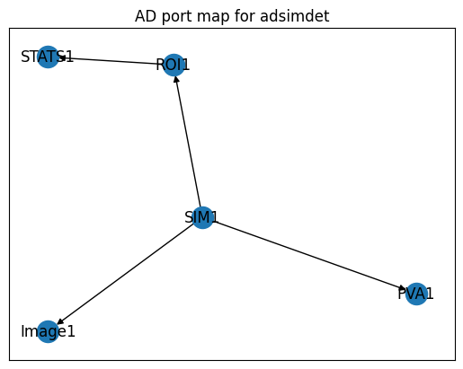
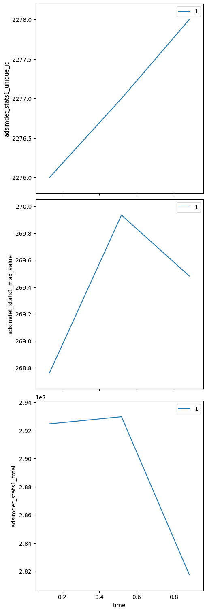
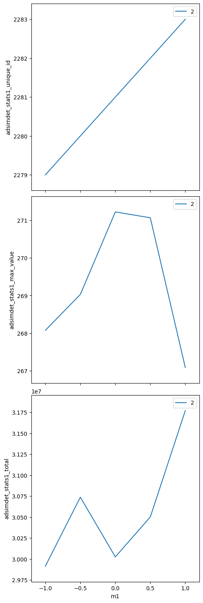
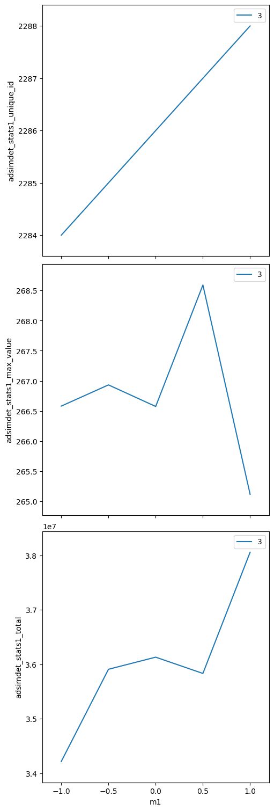
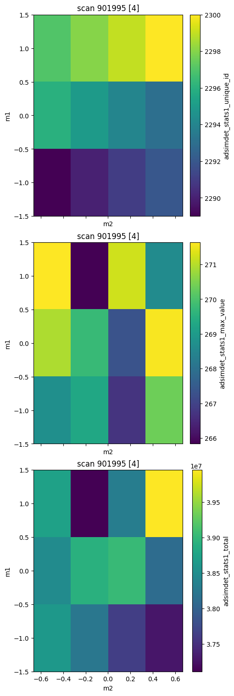
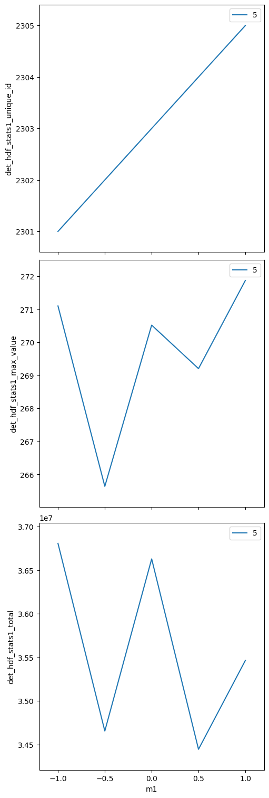

How-To: Scan Area Detector with Motor(s)#
Goals
Use an EPICS motor (
gp:m1) as the independent axis.Use an EPICS area detector (
ad:) to collect images at each step.Record ROI statistics (total counts, maximum value, unique ID) without saving image files.
Run several scan plans:
bp.count,bp.scan(1-D),bp.scan(2 motors),bp.grid_scan(2-D mesh).
This notebook requires a live EPICS system. Use ad: for the area detector IOC and gp: for the general-purpose IOC (motors).
Setup#
%matplotlib inline
import warnings
warnings.filterwarnings("ignore", category=FutureWarning)
import databroker
import bluesky
import bluesky.plans as bp
from bluesky.callbacks.best_effort import BestEffortCallback
from ophyd import EpicsMotor
from apstools.devices import ad_creator
cat = databroker.temp()
RE = bluesky.RunEngine({})
RE.subscribe(cat.v1.insert)
bec = BestEffortCallback()
RE.subscribe(bec)
1
EPICS Devices#
Connect to the motor and the area detector.
m1 = EpicsMotor("gp:m1", name="m1")
m2 = EpicsMotor("gp:m2", name="m2")
m1.wait_for_connection(timeout=10)
m2.wait_for_connection(timeout=10)
print(f"{m1.connected=} position={m1.position:.4f}")
print(f"{m2.connected=} position={m2.position:.4f}")
m1.connected=True position=1.0000
m2.connected=True position=0.5000
Create the area detector using ad_creator(). We include the cam, image, pva,
roi1, and stats1 plugins. The hdf1 plugin is intentionally omitted here —
we want ROI statistics only, with no image files written.
IOC = "ad:"
adsimdet = ad_creator(
IOC,
name="adsimdet",
plugins=["cam", "image", "pva", "roi1", "stats1"],
)
adsimdet.wait_for_connection(timeout=15)
print(f"{adsimdet.connected=}")
adsimdet.connected=True
Configure the detector#
Route the image through the ROI plugin into the Stats plugin, and select which statistics signals to record.
# Wire up: cam -> roi1 -> stats1
adsimdet.roi1.nd_array_port.put(adsimdet.cam.port_name.get())
adsimdet.stats1.nd_array_port.put(adsimdet.roi1.port_name.get())
# One frame per trigger.
adsimdet.cam.stage_sigs["num_images"] = 1
adsimdet.cam.stage_sigs["wait_for_plugins"] = "Yes"
# Non-blocking callbacks for all plugins.
adsimdet.image.stage_sigs["blocking_callbacks"] = "No"
adsimdet.pva.stage_sigs["blocking_callbacks"] = "No"
adsimdet.roi1.stage_sigs["blocking_callbacks"] = "No"
adsimdet.stats1.stage_sigs["blocking_callbacks"] = "No"
# Hint the statistics signals we want in the scan table.
adsimdet.stats1.kind = "hinted"
adsimdet.stats1.total.kind = "hinted"
adsimdet.stats1.max_value.kind = "hinted"
adsimdet.stats1.unique_id.kind = "hinted"
Visualise the plugin chain#
adsimdet.visualize_asyn_digraph()

bp.count — collect statistics without a motor scan#
uids = RE(bp.count([adsimdet], num=3))
cat.v2[uids[-1]].primary.read()[
["adsimdet_stats1_total", "adsimdet_stats1_max_value", "adsimdet_stats1_unique_id"]
]
Transient Scan ID: 1 Time: 2026-03-27 11:49:38
Persistent Unique Scan ID: 'c11b47fd-a1fc-467b-9aba-e620aa625656'
New stream: 'primary'
+-----------+------------+---------------------------+---------------------------+-----------------------+
| seq_num | time | adsimdet_stats1_unique_id | adsimdet_stats1_max_value | adsimdet_stats1_total |
+-----------+------------+---------------------------+---------------------------+-----------------------+
| 1 | 11:49:38.2 | 2276 | 269 | 29246287 |
| 2 | 11:49:38.6 | 2277 | 270 | 29297297 |
| 3 | 11:49:39.0 | 2278 | 269 | 28175553 |
+-----------+------------+---------------------------+---------------------------+-----------------------+
generator count ['c11b47fd'] (scan num: 1)
<xarray.Dataset> Size: 96B
Dimensions: (time: 3)
Coordinates:
* time (time) float64 24B 1.775e+09 1.775e+09 1.775e+09
Data variables:
adsimdet_stats1_total (time) float64 24B 2.925e+07 2.93e+07 2.818e+07
adsimdet_stats1_max_value (time) float64 24B 268.8 269.9 269.5
adsimdet_stats1_unique_id (time) int64 24B 2276 2277 2278
bp.scan — 1-D scan with one motor#
Step m1 from −1 to +1 in 5 steps, collecting stats at each point.
uids = RE(bp.scan([adsimdet], m1, -1, 1, 5))
dataset = cat.v2[uids[-1]].primary.read()
dataset[["m1", "adsimdet_stats1_total", "adsimdet_stats1_max_value"]]
Transient Scan ID: 2 Time: 2026-03-27 11:49:40
Persistent Unique Scan ID: '1f640509-2ed0-41af-ace4-a7d1df6c6ce1'
New stream: 'primary'
+-----------+------------+------------+---------------------------+---------------------------+-----------------------+
| seq_num | time | m1 | adsimdet_stats1_unique_id | adsimdet_stats1_max_value | adsimdet_stats1_total |
+-----------+------------+------------+---------------------------+---------------------------+-----------------------+
| 1 | 11:49:42.4 | -1.0000 | 2279 | 268 | 29913680 |
| 2 | 11:49:43.6 | -0.5000 | 2280 | 269 | 30736723 |
| 3 | 11:49:44.8 | -0.0000 | 2281 | 271 | 30024676 |
| 4 | 11:49:45.9 | 0.5000 | 2282 | 271 | 30500824 |
| 5 | 11:49:47.0 | 1.0000 | 2283 | 267 | 31769754 |
+-----------+------------+------------+---------------------------+---------------------------+-----------------------+
generator scan ['1f640509'] (scan num: 2)
<xarray.Dataset> Size: 160B
Dimensions: (time: 5)
Coordinates:
* time (time) float64 40B 1.775e+09 ... 1.775e+09
Data variables:
m1 (time) float64 40B -1.0 -0.5 -2.485e-06 0.5 1.0
adsimdet_stats1_total (time) float64 40B 2.991e+07 ... 3.177e+07
adsimdet_stats1_max_value (time) float64 40B 268.1 269.0 271.2 271.1 267.1
bp.scan — 1-D scan with two motors together#
Both motors step simultaneously; same number of points.
uids = RE(
bp.scan(
[adsimdet],
m1,
-1,
1,
m2,
0,
2,
5,
)
)
dataset = cat.v2[uids[-1]].primary.read()
dataset[["m1", "m2", "adsimdet_stats1_total"]]
Transient Scan ID: 3 Time: 2026-03-27 11:49:48
Persistent Unique Scan ID: 'a55a6bef-07f5-4f13-b35e-833dd8efb708'
New stream: 'primary'
+-----------+------------+------------+------------+---------------------------+---------------------------+-----------------------+
| seq_num | time | m1 | m2 | adsimdet_stats1_unique_id | adsimdet_stats1_max_value | adsimdet_stats1_total |
+-----------+------------+------------+------------+---------------------------+---------------------------+-----------------------+
| 1 | 11:49:50.4 | -1.0000 | 0.0000 | 2284 | 267 | 34214746 |
| 2 | 11:49:51.6 | -0.5000 | 0.5000 | 2285 | 267 | 35908695 |
| 3 | 11:49:52.8 | -0.0000 | 1.0000 | 2286 | 267 | 36131026 |
| 4 | 11:49:53.9 | 0.5000 | 1.5000 | 2287 | 269 | 35832060 |
| 5 | 11:49:55.1 | 1.0000 | 2.0000 | 2288 | 265 | 38058780 |
+-----------+------------+------------+------------+---------------------------+---------------------------+-----------------------+
generator scan ['a55a6bef'] (scan num: 3)
<xarray.Dataset> Size: 160B
Dimensions: (time: 5)
Coordinates:
* time (time) float64 40B 1.775e+09 1.775e+09 ... 1.775e+09
Data variables:
m1 (time) float64 40B -1.0 -0.5 -2.485e-06 0.5 1.0
m2 (time) float64 40B 0.0 0.5 1.0 1.5 2.0
adsimdet_stats1_total (time) float64 40B 3.421e+07 3.591e+07 ... 3.806e+07
bp.grid_scan — 2-D mesh scan#
m1 steps along the outer axis; m2 steps along the inner axis (snake pattern).
uids = RE(
bp.grid_scan(
[adsimdet],
m1,
-1,
1,
3,
m2,
-0.5,
0.5,
4,
snake_axes=True,
)
)
dataset = cat.v2[uids[-1]].primary.read()
dataset[["m1", "m2", "adsimdet_stats1_total", "adsimdet_stats1_max_value"]]
Transient Scan ID: 4 Time: 2026-03-27 11:49:56
Persistent Unique Scan ID: '90199571-e23d-4ff1-8a9d-456eb99e10fa'
New stream: 'primary'
+-----------+------------+------------+------------+---------------------------+---------------------------+-----------------------+
| seq_num | time | m1 | m2 | adsimdet_stats1_unique_id | adsimdet_stats1_max_value | adsimdet_stats1_total |
+-----------+------------+------------+------------+---------------------------+---------------------------+-----------------------+
| 1 | 11:49:58.9 | -1.0000 | -0.5000 | 2289 | 269 | 38630924 |
| 2 | 11:50:00.4 | -1.0000 | -0.1667 | 2290 | 269 | 38239819 |
| 3 | 11:50:01.7 | -1.0000 | 0.1667 | 2291 | 267 | 37635304 |
| 4 | 11:50:03.1 | -1.0000 | 0.5000 | 2292 | 270 | 37289665 |
| 5 | 11:50:05.1 | -0.0000 | 0.5000 | 2293 | 272 | 38115543 |
| 6 | 11:50:06.4 | -0.0000 | 0.1667 | 2294 | 267 | 39025189 |
| 7 | 11:50:07.7 | -0.0000 | -0.1667 | 2295 | 270 | 38914974 |
| 8 | 11:50:09.0 | -0.0000 | -0.5000 | 2296 | 271 | 38481101 |
| 9 | 11:50:11.1 | 1.0000 | -0.5000 | 2297 | 272 | 38741140 |
| 10 | 11:50:12.4 | 1.0000 | -0.1667 | 2298 | 266 | 37114590 |
| 11 | 11:50:13.8 | 1.0000 | 0.1667 | 2299 | 271 | 38317887 |
| 12 | 11:50:15.1 | 1.0000 | 0.5000 | 2300 | 269 | 39950394 |
+-----------+------------+------------+------------+---------------------------+---------------------------+-----------------------+
generator grid_scan ['90199571'] (scan num: 4)
<xarray.Dataset> Size: 480B
Dimensions: (time: 12)
Coordinates:
* time (time) float64 96B 1.775e+09 ... 1.775e+09
Data variables:
m1 (time) float64 96B -1.0 -1.0 -1.0 ... 1.0 1.0 1.0
m2 (time) float64 96B -0.5 -0.1667 ... 0.1667 0.5
adsimdet_stats1_total (time) float64 96B 3.863e+07 ... 3.995e+07
adsimdet_stats1_max_value (time) float64 96B 268.7 269.3 ... 271.2 268.6
Bonus: scan with HDF5 image files#
The scans above record only ROI statistics — no image files are written.
To also write image files, add the hdf1 file-writer plugin to the
detector. Everything else — the motor scan, the ROI statistics — works
identically.
File paths#
The area detector IOC and the bluesky workstation may mount the image directory under different paths. Define both so the HDF5 plugin can be configured correctly.
import pathlib
AD_IOC_MOUNT_PATH = pathlib.Path("/tmp")
BLUESKY_MOUNT_PATH = pathlib.Path("/tmp/docker_ioc/iocad/tmp")
IMAGE_DIR = "images"
# Must end with '/' — pathlib does not add it.
WRITE_PATH_TEMPLATE = f"{AD_IOC_MOUNT_PATH / IMAGE_DIR}/"
READ_PATH_TEMPLATE = f"{BLUESKY_MOUNT_PATH / IMAGE_DIR}/"
Create the detector with hdf1#
Add the hdf1 plugin to the list passed to ad_creator(). The
write_path_template and read_path_template tell the plugin where to
write files (IOC path) and where bluesky can read them back (local path).
from apstools.devices import HDF5FileWriterPlugin
from apstools.devices import ensure_AD_plugin_primed
det_hdf = ad_creator(
IOC,
name="det_hdf",
plugins=[
"cam",
"image",
"pva",
"roi1",
"stats1",
{
"hdf1": {
"class": HDF5FileWriterPlugin,
"write_path_template": WRITE_PATH_TEMPLATE,
"read_path_template": READ_PATH_TEMPLATE,
}
},
],
)
det_hdf.wait_for_connection(timeout=15)
print(f"{det_hdf.connected=}")
det_hdf.connected=True
Configure#
Same ROI-statistics setup as above, plus HDF5-specific settings.
ensure_AD_plugin_primed() ensures ophyd knows the image dimensions
before acquisition begins.
det_hdf.roi1.nd_array_port.put(det_hdf.cam.port_name.get())
det_hdf.stats1.nd_array_port.put(det_hdf.roi1.port_name.get())
det_hdf.cam.stage_sigs["num_images"] = 1
det_hdf.cam.stage_sigs["wait_for_plugins"] = "Yes"
det_hdf.image.stage_sigs["blocking_callbacks"] = "No"
det_hdf.pva.stage_sigs["blocking_callbacks"] = "No"
det_hdf.roi1.stage_sigs["blocking_callbacks"] = "No"
det_hdf.stats1.stage_sigs["blocking_callbacks"] = "No"
det_hdf.hdf1.stage_sigs["blocking_callbacks"] = "No"
det_hdf.stats1.kind = "hinted"
det_hdf.stats1.total.kind = "hinted"
det_hdf.stats1.max_value.kind = "hinted"
det_hdf.stats1.unique_id.kind = "hinted"
det_hdf.hdf1.kind = "hinted"
det_hdf.hdf1.create_directory.put(-5)
ensure_AD_plugin_primed(det_hdf.hdf1, allow=True)
Scan — ROI statistics and HDF5 image files#
The scan collects the same statistics as before. In addition, each
image is written to an HDF5 file by the hdf1 plugin.
uids = RE(bp.scan([det_hdf], m1, -1, 1, 5))
dataset = cat.v2[uids[-1]].primary.read()
dataset[["m1", "det_hdf_stats1_total", "det_hdf_stats1_max_value"]]
Transient Scan ID: 5 Time: 2026-03-27 11:50:17
Persistent Unique Scan ID: '4d69ce0a-169b-412e-a27f-9767d8358f40'
New stream: 'primary'
+-----------+------------+------------+--------------------------+--------------------------+----------------------+
| seq_num | time | m1 | det_hdf_stats1_unique_id | det_hdf_stats1_max_value | det_hdf_stats1_total |
+-----------+------------+------------+--------------------------+--------------------------+----------------------+
| 1 | 11:50:20.0 | -1.0000 | 2301 | 271 | 36807077 |
| 2 | 11:50:21.4 | -0.5000 | 2302 | 266 | 34654953 |
| 3 | 11:50:23.0 | -0.0000 | 2303 | 271 | 36628788 |
| 4 | 11:50:24.4 | 0.5000 | 2304 | 269 | 34445429 |
| 5 | 11:50:25.8 | 1.0000 | 2305 | 272 | 35464250 |
+-----------+------------+------------+--------------------------+--------------------------+----------------------+
generator scan ['4d69ce0a'] (scan num: 5)
<xarray.Dataset> Size: 160B
Dimensions: (time: 5)
Coordinates:
* time (time) float64 40B 1.775e+09 ... 1.775e+09
Data variables:
m1 (time) float64 40B -1.0 -0.5 -2.485e-06 0.5 1.0
det_hdf_stats1_total (time) float64 40B 3.681e+07 ... 3.546e+07
det_hdf_stats1_max_value (time) float64 40B 271.1 265.6 270.5 269.2 271.9
Locate the image file#
from apstools.devices import AD_full_file_name_local
image_file = AD_full_file_name_local(det_hdf.hdf1)
print(f"Image file: {image_file}")
print(f"Exists on local filesystem: {image_file.exists()}")
Image file: /tmp/docker_ioc/iocad/tmp/images/d3f38f4e-1bf7-4846-9139_000000.h5
Exists on local filesystem: True